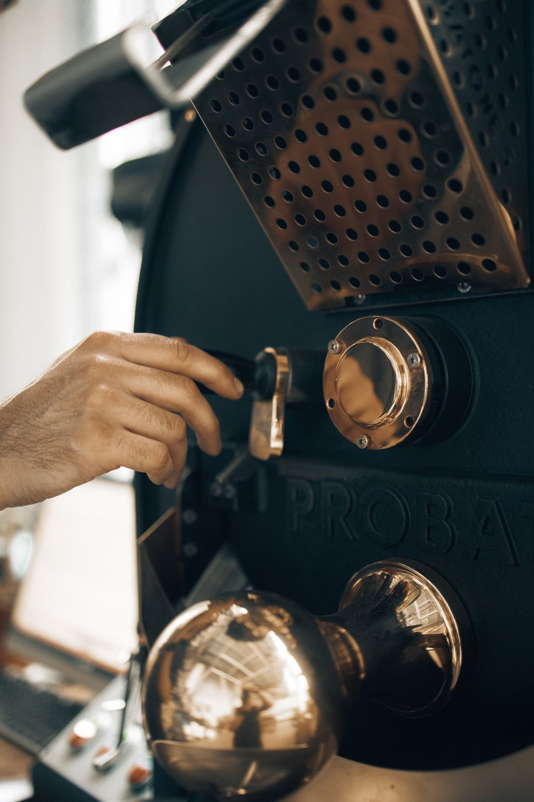
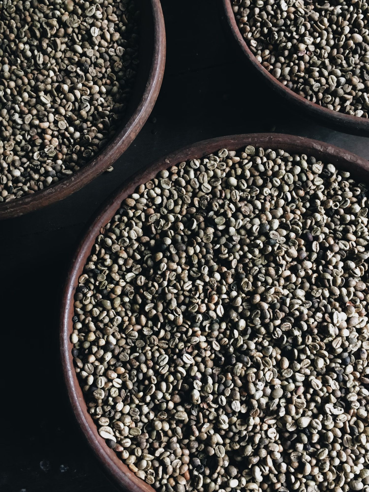
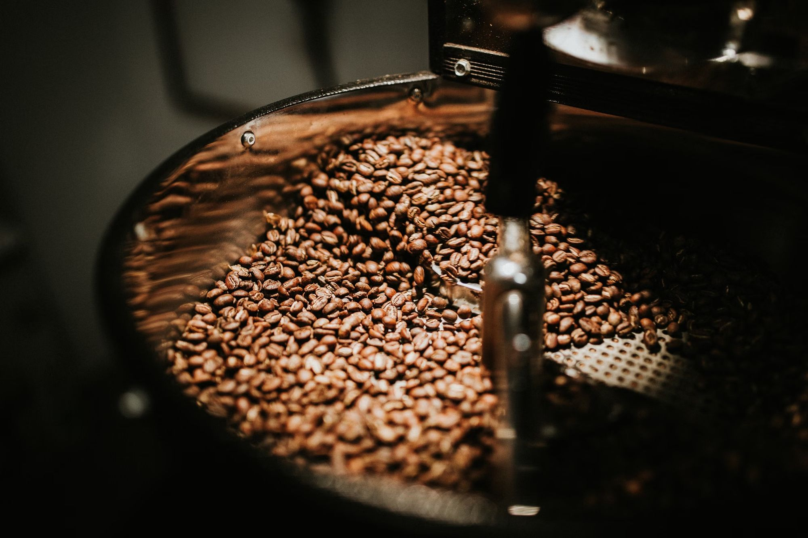
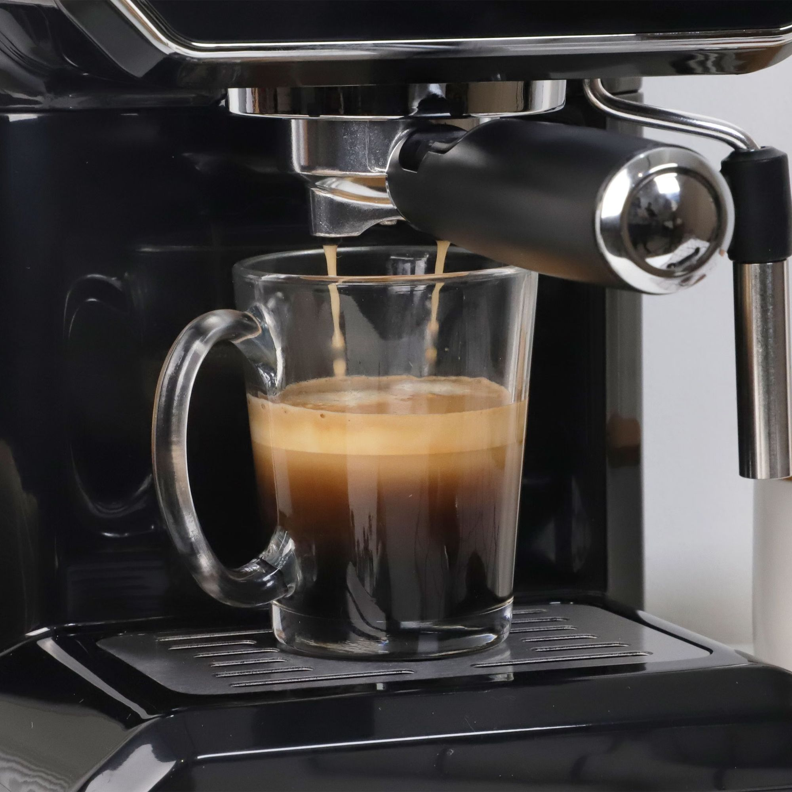
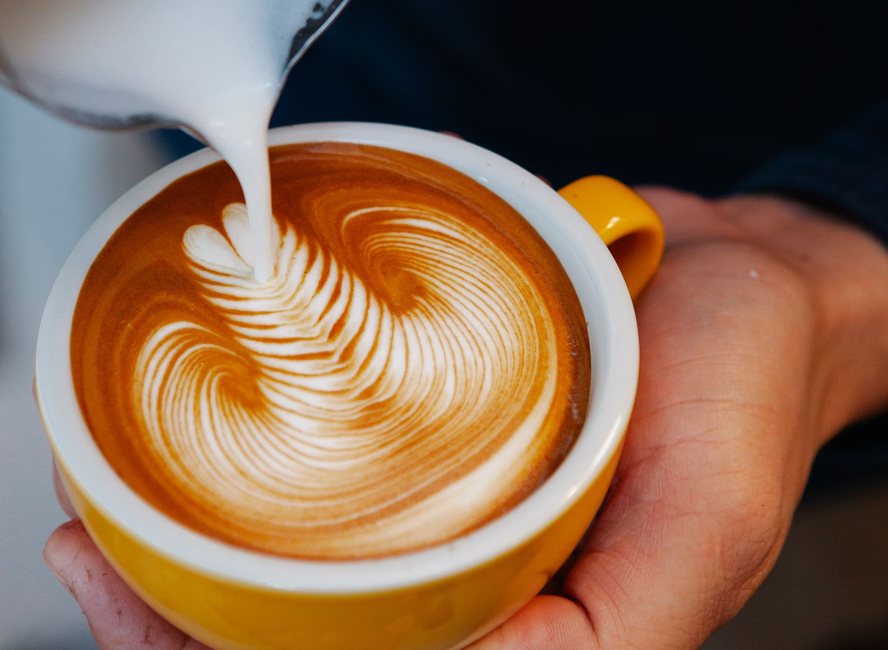

Roaster DailyCoffee roasters & coffee community. From the green bean to your cup, in one scroll.
Raw, dense and grassy. Specialty green coffee arrives from the farm at around 11% moisture — all the sugar and acidity is there, locked inside.
The drum turns, the beans dry, then yellow, then brown. Maillard reactions build the sweetness we'll taste later.
Around 196°C the beans pop like popcorn. From here, seconds decide the profile — brighter or deeper.
The roast falls into the cooling tray and gets stirred down fast to lock in the flavor. Then it rests to release CO₂.
18 grams, fresh, right before brewing. Grind size is the dial between sour and bitter.
93°C water at 9 bar for about 28 seconds: 18 g in, 36 g out. Honey-thick, with a hazelnut crema.
Milk steamed to 62°C into glossy microfoam, poured with a steady hand until a rosetta blooms on top.
Roasted daily · poured with love
Roaster Daily is a coffee roastery and a meeting point. We roast in small batches, share what we learn, and bring people together around a good cup — from first cupping to the last sip.
Fresh roasts, profiled batch by batch to show each origin at its best.
Espresso, filter and milk drinks, dialed in every morning.
Cuppings, talks and coffee friends. Come for a coffee, stay for the conversation.





Follow the roasts, the new origins and the next community meetups on Instagram.
@roasterdaily